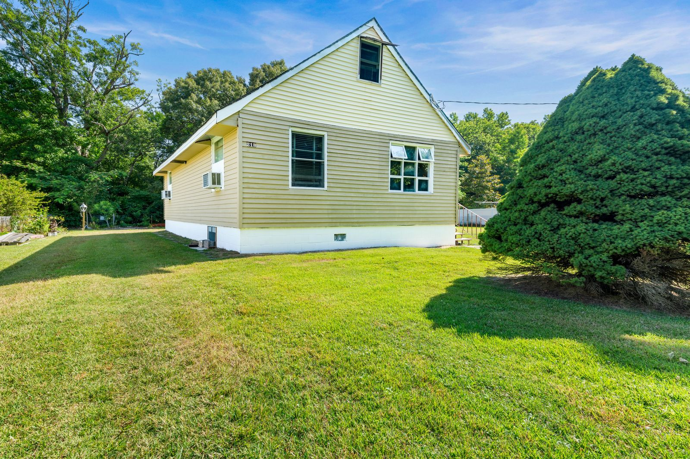

Real Estate Photographer in Cape May, NJ
HDR listing photos, drone aerials and virtual twilights for Cape May listings, edited and delivered MLS-ready. 3 Cape May shoots and counting.

Homes in Cape May
Cape May is known for its Victorian district and its beaches at the southern tip of New Jersey, but plenty of homes with a Cape May address sit outside the historic streets, in wooded neighborhoods of ranches and Cape Cods on larger lots. That is where our Cape May shoots have been: a Cape Cod with knotty pine interiors on a big tree-lined lot on Iselin Rd, a red-shingle ranch with a cast iron wood stove, raised garden beds and a barn-style shed on Blueberry Ln S, and a ranch on Thistle Ln with a white kitchen, a vaulted living room, a shaded back deck and a covered front porch with rocking chairs.
The interiors in these homes have character worth showing. At Iselin Rd we photographed a knotty pine living room with a big picture window, a wood-paneled kitchen and an updated bathroom with a glass shower. Blueberry Ln S had a living room with a pressed-tin style ceiling and a wood stove on a tile hearth. At Thistle Ln, the white kitchen with recessed lighting, a dining area with French doors and a Japanese maple out front each got their own frame.
What photos sell a Cape May listing
In these neighborhoods the lot is a selling point, and it is hard to show from the ground. Trees hide where the property ends, and a wide lawn just looks like grass in a phone photo. Drone aerials fix that: a top-down view shows the shape of the lot, the driveway and the outbuildings, and a wider shot over the treetops shows the quiet, wooded setting buyers come here for. Inside, wood-paneled and knotty pine rooms are tricky because they soak up light and can turn orange on camera; bracketed HDR exposures and careful color correction keep the wood warm and true while the windows stay clear. We also give the details that make a home feel like Cape May their own frames: porches, wood stoves, gardens and sheds. For second homes and rentals, our vacation rental shoot pairs a lifestyle session with the house shoot.
Cape May real estate photography packages
Packages start at $295. Cape May is at the far end of our home county, and every package price applies there as listed. Essential ($295) is 40–50 HDR photos, 30–35 ground and 10–15 drone, professionally edited, sized for the MLS and delivered the next day. Showcase ($475) adds a 60-second exterior drone video, two virtual twilight edits and a 2D floor plan. Premiere ($750) adds a 1–2 minute cinematic walkthrough and a Matterport 3D tour with three months of hosting. Virtual staging is $35 a photo and decluttering is $25 a photo.